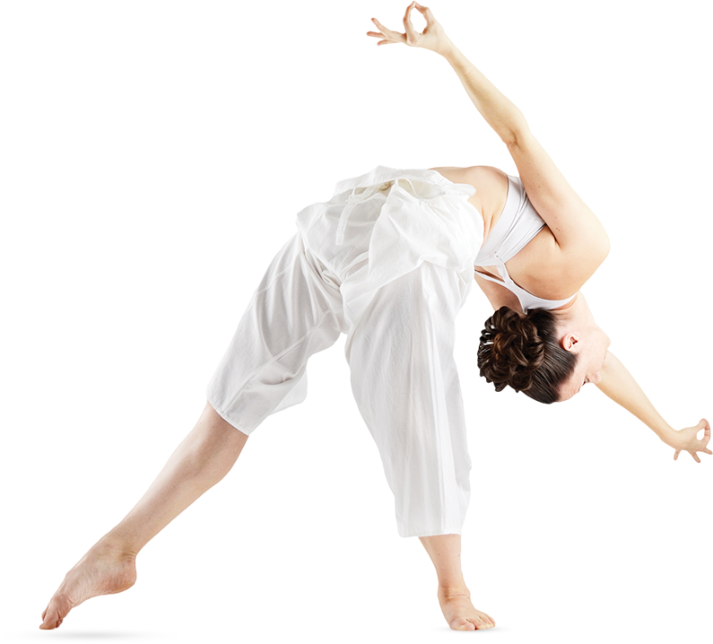

<section class="section reviews-section page">
	<div class="inner">
		<div class="container">
			<div class="menu">
				<button class="menu__wrapper">
					<div class="menu__burger">
						<div></div>
						<div></div>
						<div></div>
					</div>
					<div class="menu__text">
						Меню
					</div>
				</button>
			</div>
			<div class="section-title">
				<div class="section-title__inner">
					Отзывы
				</div>
			</div>
			<div class="phone">
				<a href="tel:+7 (812) 345-56-97">+7 (812) 345-56-97</a>
			</div>
			<div class="lotos-logo">
				
				<div class="tabs reviews__tabs">
					<ul>
						<li class="reviews__tab reviews__tab--active tab tab--active"><a href="#">Жанна Блиц</a></li>
						<li class="reviews__tab tab"><a href="#">Арина Наумова</a></li>
						<li class="reviews__tab tab"><a href="#">Виталий Коробко</a></li>
						<li class="reviews__tab tab"><a href="#">Елена Снежная</a></li>
						<li class="reviews__tab tab"><a href="#">Юлиана Ветрова</a></li>
					</ul>
				</div>
			</div>
			<div class="girl"></div>
			<div class="central-text">
				<ul>
					<li class="tab-item reviews__tab-item tab-item--active">
						<div class="central-text__author">
							<div class="central-text__img">
								
							</div>
							<div class="central-text__author-info">
								<div class="central-text__name">Жанна Блиц</div>
								<div class="central-text__age">34 года</div>
							</div>
						</div>

						<p class="central-text__reviews">Не знаю, как остальные, но после занятий йогой хочется начать новую
							здоровую
							жизнь, хочется поесть овощей и фруктов и поднять свой иммунитет. Теперь для меня день занятий йогой — это
							день
							здоровья.</p>
						<p class="central-text__reviews">После упорных занятий я стала меньше болеть, и поняла,
							в чем смысл всех упражнений. Позы получаются элегантно, и не больно только тогда, когда не прилагаешь
							усилия,
							а остаёшься расслабленным на протяжении всего урока.</p>
					</li>
					<li class="tab-item reviews__tab-item">
						<div class="central-text__author">
							<div class="central-text__img">
								
							</div>
							<div class="central-text__author-info">
								<div class="central-text__name">Арина Наумова</div>
								<div class="central-text__age">25 года</div>
							</div>
						</div>
						<p class="central-text__reviews">Мне йога позволила доказать, что возможности тела безграничны.
							После рождения сына, вопрос физического состояния встал особенно остро. Решать его необходимо было мягкими
							способами, с учетом возможностей при ГВ. Рассмотрев варианты, пришла на занятия в студию йоги.
						</p>
						<p class="central-text__reviews">
							Асаны, естественно, дались ни с первого и даже не со второго занятия! Здесь главное - практика под чутким
							руководством учителя. Хочу выразить огромную благодарность за возможность
							начинать субботний день с абсолютной гармонией!</p>

					</li>
					<li class="tab-item reviews__tab-item">
						<div class="central-text__author">
							<div class="central-text__img">
								
							</div>
							<div class="central-text__author-info">
								<div class="central-text__name">Виталий Коробко</div>
								<div class="central-text__age">45 года</div>
							</div>
						</div>
						<p class="central-text__reviews">
							Бегать я стал лучше, при этом точно знаю, что само по себе на пустом месте ничего не появляется и со
							временем физическое состояние может стать только хуже, а вот лучше, ни-ни.
						</p>
						<p class="central-text__reviews"> Единственный фактор, способный влиять благотворно - это занятие йогой.
							Ходить надо регулярно, без пропусков. Ничего заметного такого с телом не происходит. Разница чувствуется
							при наблюдении в масштабе месяцев, да и то если
							прислушиваешься к своим внутренним ощущениям. Когда видишь явно изменения в лучшую сторону, то хочется
							продолжать занятия</p>

					</li>
					<li class="tab-item reviews__tab-item">
						<div class="central-text__author">
							<div class="central-text__img">
								
							</div>
							<div class="central-text__author-info">
								<div class="central-text__name">Елена Снежная</div>
								<div class="central-text__age">36 года</div>
							</div>
						</div>

						<p class="central-text__reviews">До йоги меня мучили боли в шее (шейный остеохондроз) и спине (грыжа
							позвоночника). Я не могла согнуться, проще говоря «железный человек после дождя».
						</p>
						<p class="central-text__reviews">Асаны пока мне даются с большим трудом. Но под руководством опытных и
							квалифицированных инструкторов занятия приносят свои плоды. Потихоньку укрепляется пресс, подтягиваются
							ягодицы, оздоравливается весь организм, появляется гибкость в теле, улучшился сон. А главное прошла
							мучительная боль в спине!!!
						</p>
					</li>
					<li class="tab-item reviews__tab-item">
						<div class="central-text__author">
							<div class="central-text__img">
								
							</div>
							<div class="central-text__author-info">
								<div class="central-text__name">Юлиана Ветрова</div>
								<div class="central-text__age">21 года</div>
							</div>
						</div>

						<p class="central-text__reviews">Не знаю, как остальные, но после занятий йогой хочется начать новую
							здоровую
							жизнь, хочется поесть овощей и фруктов и поднять свой иммунитет. Теперь для меня день занятий йогой — это
							день
							здоровья.</p>
						<p class="central-text__reviews">После упорных занятий я стала меньше болеть, и поняла,
							в чем смысл всех упражнений. Позы получаются элегантно, и не больно только тогда, когда не прилагаешь
							усилия,
							а остаёшься расслабленным на протяжении всего урока.</p>
					</li>
				</ul>
				<button class="central-text__button">
					<div class="central-text__circle"></div>
					<div class="central-text__button-text">Попробовать тоже</div>
				</button>
			</div>


			<div class="number-page">
				<div class="number-page__this">07</div>
				<div class="number-page__all">-08</div>
			</div>
			<div class="social">
				<ul>
					<li><a href="#">vk</a></li>
					<li><a href="#">fb</a></li>
					<li><a href="#">inst</a></li>
				</ul>
			</div>
			<div class="next-page">
				<a class="next-page__text" href="#" id="b-navkey__next">Контакты<div class="next-page__button">
						<svg version="1.1" width="6px" height="6px" xmlns="http://www.w3.org/2000/svg"
							xmlns:xlink="http://www.w3.org/1999/xlink" xml:space="preserve" viewBox="0 0 100 100"
							preserveAspectRatio="none">

							<polygon fill="#fff" points="0,100 50,0 100,100" />
						</svg>
					</div></a>
			</div>
		</div>
	</div>
</section>